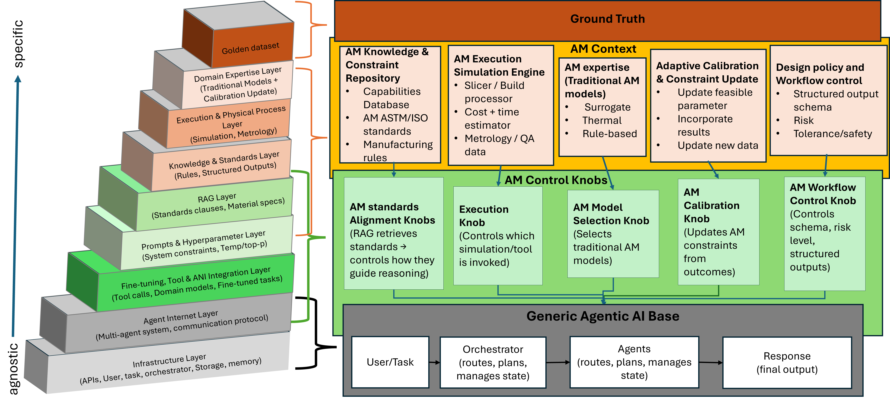

Golden Datasets in Additive Manufacturing AI
In additive manufacturing, high-quality datasets are essential for developing reliable AI models. A golden dataset is a high-quality, curated collection of data that serves as a reference standard for training, validating, and benchmarking AI models, especially in agentic AI systems. In the AM context, it encompasses diverse, representative samples that capture the full spectrum of AM processes, materials, geometries, and operational conditions. Their detailed characteristics and applications are explored in the sections below.
Purpose of Golden Datasets:
- Agentic AI: Support the development and evaluation of autonomous AI systems
- Benchmarking: Enable standardized evaluation and comparison of AI models
- Training: Provide the foundational data for model learning and fine-tuning
- Prompt Engineering: Guide effective interactions between humans and AI models
Each golden dataset is characterized by its specific data formats, structure, and intended applications. Understanding the role of these datasets helps researchers and practitioners select the right resources for their AI in AM workflows.

Illustration showing the relationship between AM context, golden datasets, agentic AI stack layers, and various control knobs for AI system configuration.
Role of Golden Datasets for Benchmarking
Golden datasets for benchmarking provide standardized reference points for evaluating and comparing the performance of different AI models on consistent AM tasks. These datasets enable reproducible research and objective assessment of model capabilities.
Typical Data Formats: JSON, CSV, STL, OBJ, STEP, HDF5, Images, XML
AM-AI Benchmark Dataset
A comprehensive benchmark dataset for evaluating AI models across common AM tasks including design optimization, parameter selection, and defect classification.
Using Benchmarking Datasets
When utilizing these benchmarking datasets, consider the following best practices:
- Use the provided evaluation metrics for consistent comparison
- Report all relevant model parameters and training details
- Benchmark against the provided baseline model performances
- Consider both quantitative metrics and qualitative assessments
- Document any preprocessing or modifications to the dataset
Reuse Potential: Benchmarking datasets often contain valuable data that can be repurposed for training tasks, particularly the NIST AM Process Benchmark dataset which includes comprehensive process parameter data suitable for machine learning model training.
Role of Golden Datasets for Training
Golden datasets for training provide the comprehensive data collections necessary for teaching AI models the patterns, relationships, and characteristics specific to additive manufacturing processes. These datasets enable models to learn from real-world examples and generalize to new AM scenarios.
Typical Data Formats: STL, OBJ, STEP, JSON, CSV, Images, XML annotations
AM Design Corpus
A large collection of 3D models specifically designed for additive manufacturing, with associated metadata on design intent, manufacturing constraints, and performance requirements.
LPBF Process Parameter Dataset
Comprehensive dataset of laser powder bed fusion process parameters and resulting part characteristics, covering multiple materials and machine configurations.
AM Defect Classification Dataset
Labeled image dataset of common AM defects across multiple process types, with annotations on defect type, severity, and probable causes.
Best Practices for Training Data Usage
When using these datasets for model training:
- Ensure proper data preprocessing and normalization
- Split data appropriately into training, validation, and test sets
- Consider data augmentation techniques to increase dataset diversity
- Monitor for overfitting and use regularization techniques
- Validate model performance on unseen data
Reuse Potential: Training datasets like the AM Design Corpus can also serve benchmarking purposes for evaluating generative design models, while the LPBF Process Parameter Dataset shares overlap with benchmarking datasets for process optimization tasks.
Role of Golden Datasets for Agentic AI
Golden datasets for agentic AI provide structured data representations of AM workflows, decision-making processes, and human-agent interactions necessary for developing and evaluating autonomous AI systems in additive manufacturing environments.
Typical Data Formats: JSON, YAML, CSV, Text
- Decision Quality Metrics: Evaluating the effectiveness of agent decisions against expert benchmarks
- Interaction Quality Assessment: Measuring the clarity and usefulness of agent communications
- Process Optimization Evaluation: Assessing improvements in manufacturing outcomes
- Adaptation Capability Testing: Measuring how effectively agents adapt to novel scenarios
Reuse Potential: Agent interaction datasets can inform the development of better training datasets by identifying common challenges and decision points in AM workflows, while workflow datasets can be adapted for benchmarking agent planning capabilities.
Role of Golden Datasets for Prompt Engineering
Golden datasets for prompt engineering provide curated collections of effective prompts and prompt-engineering techniques specifically designed for additive manufacturing contexts. These datasets help users structure effective interactions with AI models to achieve desired outputs in AM applications.
Typical Data Formats: Text, JSON, Markdown
AM Prompt Engineering Collection
Curated collection of effective prompts for various AM tasks, organized by technique (Zero-shot, Few-shot, Chain-of-thought, ReAct, and Directional Stimulus Prompting) with examples and explanations.
Prompt Engineering Techniques
The prompt collections include examples of five popular prompt engineering methods applied to AM-specific tasks:
- Zero-shot: Prompts that elicit responses without providing examples
- Few-shot: Prompts that include examples of expected outputs
- Chain-of-thought: Prompts that guide the model through a reasoning process
- ReAct: Prompts that combine reasoning and actions in a structured format
- Directional Stimulus: Prompts that guide the model toward specific types of responses
For more information on effective prompt engineering for AM, see our Prompt Engineering Tutorial.
Reuse Potential: Prompt engineering datasets can support training efforts by providing examples of effective query formulations for fine-tuning language models, and can enhance benchmarking by enabling standardized evaluation of model responses to AM-specific prompts.
Data Reuse & Cross-Applicability
Many golden datasets in the AM AI repository possess characteristics that make them valuable across multiple application categories. Understanding these overlaps can help researchers maximize the utility of their data resources and reduce redundancy in data collection efforts.
Common Reuse Patterns:
- Benchmarking ↔ Training: Process parameter and quality control datasets often serve dual purposes
- Training ↔ Agentic AI: Design and workflow datasets support both model training and agent behavior learning
- Benchmarking ↔ Agentic AI: Interaction datasets can benchmark agent communication capabilities
- All Categories ↔ Prompt Engineering: Prompt collections enhance effectiveness across all AI applications
High-Reuse Dataset Examples
Certain datasets in our collection are particularly valuable for multiple AI applications due to their comprehensive nature and versatile data structures.
Guidelines for Data Reuse
When considering reuse of datasets across categories:
- Verify that the dataset contains appropriate data types and annotations for the target application
- Check licensing and usage restrictions to ensure compliance across intended uses
- Consider whether additional processing or annotation is needed for the new application
- Document any adaptations made to the dataset for reuse purposes
- Validate that performance metrics remain meaningful in the new context
Example: Golden Dataset Across the AM Lifecycle
To illustrate how a golden dataset manifests across different stages of additive manufacturing, here's a concrete example showing the types of data typically included:
What a Golden Dataset Looks Like for AM Lifecycle:
- Design: Design dataset – CAD models, material specifications, functional requirements.
- Process Planning: Pre‑process dataset – sliced layers, support structures, scan strategies.
- Build & Monitoring:
- Process monitoring – sensor logs (temperature, melt‑pool, laser power).
- Melt‑pool images – high‑speed imaging of the melt pool.
- Post‑Process:
- Post‑process – heat treatment, machining, surface finishing.
- Porosity images – XCT or microscopy images showing pores.
- Quality measurement – mechanical testing, dimensional accuracy, surface roughness.
- Feedback Loops: Records of human‑in‑the‑loop corrections and agent decisions that can be used for reinforcement learning.
This example demonstrates how a comprehensive golden dataset spans the entire AM lifecycle, providing valuable data for training, validating, and benchmarking AI systems at every stage.